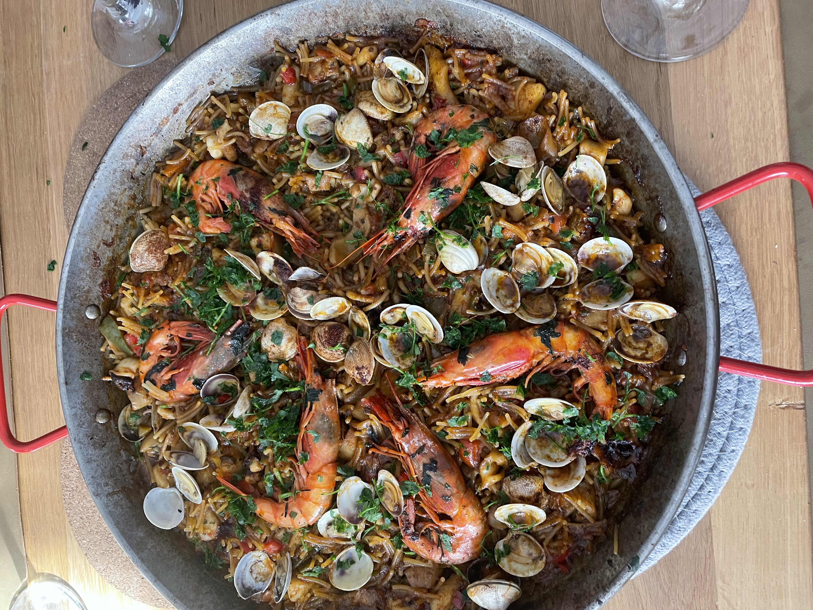

Paella
Ingredients
4×
- 1 seiche
- 1 calamar
- 1 oignon
- 2 gousses d'ail
- tomate
- 0.5 poivron
- 4 artichauts
- sel
- gambas
- langoustines
- 400 g de riz
- 8 louches de fumet
- 100 g de moules
- palourdes

Préparation
Étape 1
Faire cuire 1 seiche et 1 calamar pour qu’ils rendent leur eau. Retirer.
Étape 2
Préparer le sofregit : faire revenir 1 oignon, 2 gousses d'ail, de la tomate, 0.5 poivron, 4 artichauts et du sel.
Étape 3
Ajouter les fruits de mer : gambas et langoustines. Puis les retirer.
Étape 4
Faire nacrer 400 g de riz dans le sofregit. Ajouter la seiche, le calamar et 8 louches de fumet.
Étape 5
Cuire à feu moyen pendant 15min.
Étape 6
Au bout de 10min, remettre les gambas et les langoustines, et ajouter 100 g de moules et des palourdes.
Étape 7
À la fin, laisser reposer 5min à couvert.
Conseils
- Compter 100g de riz et 2 louches de fumet par personne (même quantité de liquide).